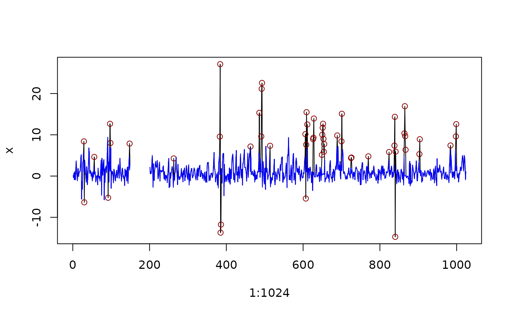

Detect local outliers in vector data with a Hampel filter using median
absolute deviation (MAD), and replaces with the local median value or NA.
Usage
replace_outliers(x, width, t0 = 3, na.rm = FALSE, return = c("median", "NA"))Arguments
- x
A numeric vector.
- width
A numeric scalar for the window length of
(2 × width + 1)samples.- t0
A numeric scalar for the outlier threshold, default is 3 (Pearson's rule).
- na.rm
A logical indicating whether missing values should be ignored before the filter is applied (see Details).
- return
Indicates whether outliers should be replaced with the local "median" value (default), or returned as
NA.
Details
The "median absolute deviation" computation is done in the [-width...width]
vicinity of each point at least width steps away from the end points of the
interval. At the lower and upper end the time series values are preserved.
A high threshold makes the filter more forgiving, a low one will declare
more points to be outliers. t0 = 3 (default) corresponds to Pearson's
3 sigma edit rule, t0 = 0 to Tukey's median filter.
NA values in the numeric vector will cause an error unless na.rm = TRUE.
Then NA values are skipped for outlier detection, and preserved in the
returned vector y.
The default return = "median" will replace outliers with the local
median value, as in pracma::hampel(). Otherwise, outliers will be
returned as NA.
Examples
set.seed(8421)
x <- numeric(1024)
z <- rnorm(1024)
x[1] <- z[1]
for (i in 2:1024) {
x[i] <- 0.4*x[i-1] + 0.8*x[i-1]*z[i-1] + z[i]
}
x[150:200] <- NA ## generate NA values
# replace_outliers(x, width = 20, na.rm = FALSE) ## returns error
y <- replace_outliers(x, width = 20, na.rm = TRUE)
idO <- which(x != y) ## identify outlier indices
outliers <- x[idO] ## identify outlier values
plot(1:1024, x, type="l")
points(idO, outliers, pch=21, col="darkred")
lines(y, col="blue")
